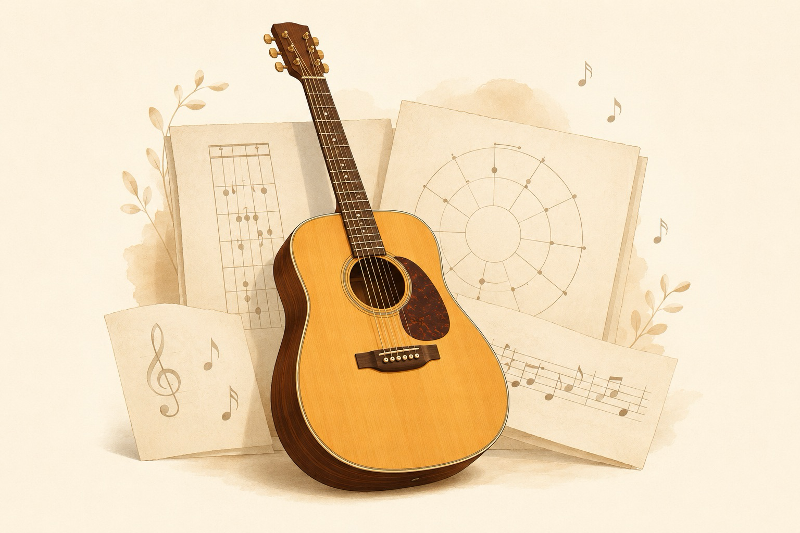

A BookBank Field Guide · Acoustic
Guitar!
Understand the instrument — the notes, the fretboard,
and the theory that makes it all click.

A warm editorial illustration of a single acoustic dreadnought guitar seen from a gentle three-quarter angle, resting against a stack of music-theory sketches — a fretboard diagram, a circle of fifths, a few floating notes. Honey, spruce-cream, and rosewood-brown palette, soft studio light, flat vector style with subtle paper grain, generous whitespace, no text baked in. ~1200x800px, 3:2 landscape; keep the guitar centred with safe margins, it is letterboxed into a 3:2 box.
Generate with your image agent, then drop the file here.
Told in the voice of Mateo Cruz — 25 years, acoustic to classical.
“Slow is smooth. Smooth becomes fast.”
The Path
What we'll cover
Nine short lessons, each with a drill you can do today. We build in order — every page uses what the last one taught. Don't skip; layer.
- Meet the GuitarParts · holding · tuning
- The Twelve NotesAlphabet · steps · octaves
- The Fretboard is a MapWhere every note lives
- IntervalsThe distance between notes
- How Chords Are BuiltStacking thirds into triads
- Your First Open ChordsEm Am C G D E A
- Rhythm & StrummingTiming before melody
- Scales — PathwaysMajor & the pentatonic box
- Keys & ProgressionsWhy songs sound whole
- CheatsheetEverything, one page